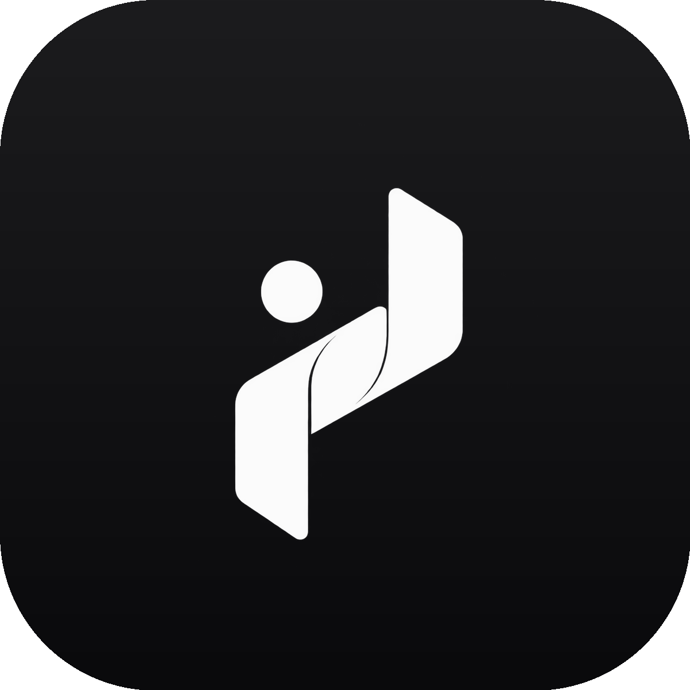

Your data never leaves the phone
No cloud account, no tracking, no internet required. Everything lives in one local database on your device.

Habit Flow عاداتك A NOVU mobile productA NOVU product · Mobile app
Build habits that last. Calm, honest and fully offline — Arabic-first with a complete English mode.
Overview & excellence
The habits market is full of apps that nag. Habit Flow refuses that game — it stays calm, honest and fully on-device.
Instead of pulling you back every hour and selling your attention, it wins by subtraction: a restful dark interface, one-tap logging, and reward loops that celebrate showing up — not staring at a screen.
No cloud account, no tracking, no internet required. Everything lives in one local database on your device.
Statistics show streaks and slumps alike. No cherry-picked numbers to manufacture addiction — just the truth.
A quiet, dark interface designed to fade into the background, so the habit is what stays in focus.
Fully offline, launched in a second, with local reminders and a homescreen widget — momentum even without a connection.
Features & strengths
Four core features do the heavy lifting; four strengths keep the experience comfortable for years, not weeks.
Privacy policy
Because Habit Flow works fully offline, this policy is short and written in plain language.
Nothing that leaves your device. Habit data, check-ins and progress live in a local database on your phone. No accounts, no sign-up telemetry, no third-party SDKs.
Your entries power only the app's own screens: lists, streaks, statistics and the heatmap. They are never transmitted, sold or analysed by anyone else.
You stay in control: delete individual habits or wipe everything in one tap. Removing the app deletes the local database.
Following standard privacy-law principles, you can export a full copy of your data at any time and take it anywhere. Contact NOVU to ask questions or request removal.
Data stays inside a private, app-scoped storage area, protected by your device OS and your screen lock.
There are none. No analytics, no ad networks, no crash-reporting services phone home.
Last updated: September 2026 · This policy changes only if a future version ever handles data differently.